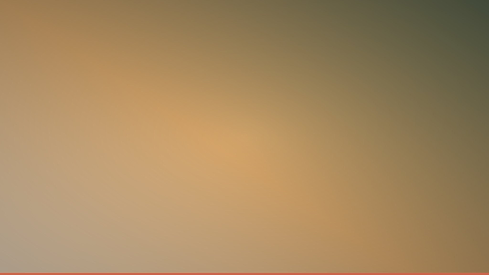

Клетка — слово, которое пугает многих хозяев. В голове сразу «тюрьма» и «наказание». На самом деле правильно введённая клетка — это безопасное укрытие, личное пространство собаки, где ей спокойно. Собаки — норные животные, им нужно «своё» закрытое место. Семь дней, шаг за шагом, без принуждения.
Клетка решает несколько задач одновременно:
Клетка никогда не должна быть местом наказания. Это «нора» — место комфорта.
Клетка должна быть достаточно большой, чтобы собака могла:
Но не настолько большой, чтобы собака могла «выделить» угол под туалет. Один из принципов приучения к туалету — собака не загрязняет там, где спит. Если клетка слишком просторна, этот принцип не работает.
Для щенка: берите клетку с перегородкой — увеличивайте пространство по мере роста. Материал: металлическая сетка (хорошая вентиляция), пластиковый переносной бокс (уютнее, темнее) или мягкая тканевая клетка (только для уже приученных собак).
🐾 Здоровье питомца под контролем
AI-ветеринар, дневник здоровья и персональные советы для вашего питомца — установите AnimaLife бесплатно.
Поставьте клетку в гостиной или там, где проводит время семья. Откройте дверцу и не закрывайте несколько часов. Бросьте внутрь несколько лакомств и игрушку. Не тащите собаку внутрь, не подталкивайте. Просто ждите.
Большинство собак зайдут за лакомством в течение первого часа. Это уже успех. Не закрывайте дверцу — пусть заходит и выходит свободно. Цель дня: клетка существует, там бывают вкусности.
Поставьте миску с едой у входа в клетку. Если собака нервничает при приближении — достаточно. Если спокойна — поставьте чуть глубже. Если заходит без стресса — миска в конце клетки.
Кормление — самый мощный позитивный якорь. Собака, которая получает еду в клетке или у клетки, начинает ассоциировать её с хорошим.
Собака спокойно заходит за едой. Теперь: пока она ест — мягко закройте дверцу. Сразу откройте, когда поела. Без замка — просто прикрыть.
Постепенно увеличивайте время закрытой двери: 1 минута → 3 минуты → 5 минут. Вы при этом рядом — не уходите. Если собака начинает скулить — не открывайте немедленно (иначе скуление закрепляется как «способ выйти»), но и не выдерживайте сверхдолго. Откройте в момент паузы, не в момент скуления.
Собака спокойно остаётся в закрытой клетке 5–10 минут рядом с вами. Теперь: закройте дверцу и выйдите из комнаты на 5 минут. Вернитесь спокойно, откройте без церемоний.
Постепенно: 5 минут → 20 минут → 45 минут → 1,5 часа. Это займёт 2–3 дня. Между сессиями — игра и прогулка: уставшая собака заходит в клетку охотнее.
Полезные дополнения для комфорта в клетке:
Поставьте клетку в вашей спальне — рядом с кроватью. Собаке комфортнее слышать и чувствовать хозяина. Уложите её по обычному вечернему ритуалу: прогулка, еда, туалет, команда «место».
Щенок, скорее всего, будет скулить первые ночи. Это нормально. Опускайте руку, чтобы собака могла понюхать — не вытаскивайте. Через 3–5 ночей большинство щенков адаптируются.
Максимальное время в клетке ночью для щенков:
🐾 Первая помощь — всегда под рукой
AnimaLife подскажет, что делать в тревожной ситуации с питомцем ещё до визита к врачу. Откройте в один тап.
🐾 Понравился разбор?
Подпишитесь на канал — каждый день разбираем по одному тревожному симптому у кошек и собак: что в пределах нормы, а когда пора к врачу. Подпишитесь, чтобы не пропустить разбор, который может спасти здоровье вашего питомца.
Клетка, введённая правильно, становится любимым местом собаки — а не источником стресса. Семь дней последовательной работы по принципу «только положительные ассоциации» и «никогда не торопить» — и большинство собак принимают клетку охотно. О следующем шаге — приучении щенка к туалету — читайте в статье дрессировка туалету дома.